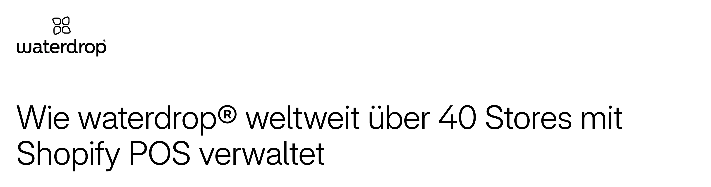
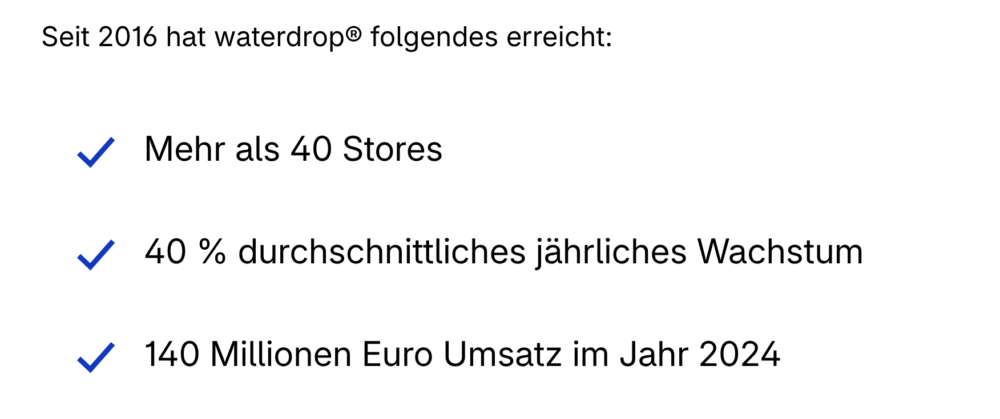
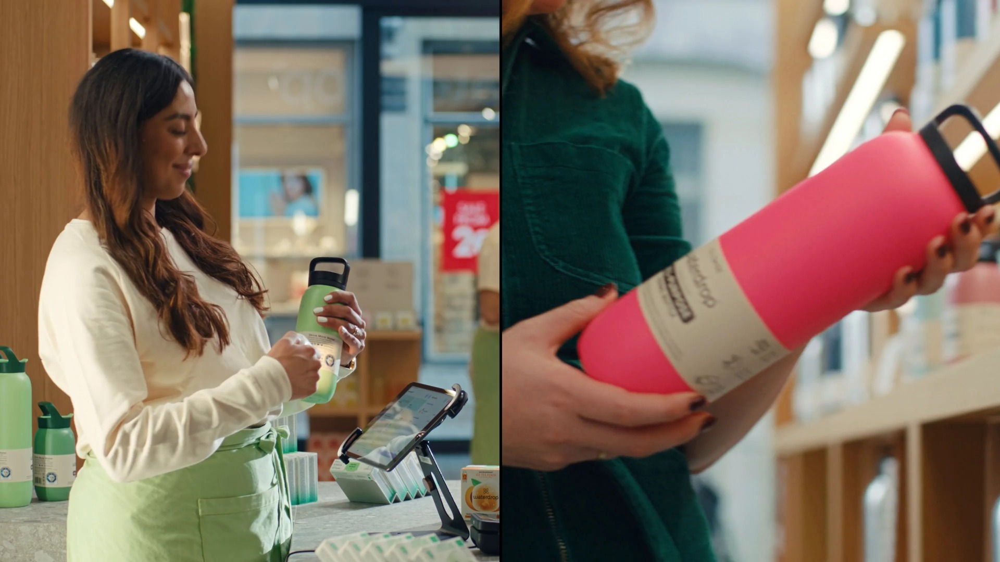

Shopify · Fallstudie waterdrop
Die Geschichte


140 Mio. € Umsatz
im Jahr 2024
Die Reihe
Marken-Story:
waterdrop
2024.
Gestartet mit
2016
gegründet
Produktversprechen
einfach
& verständlich
Das Produktversprechen
fertige Flasche
Getränk
Microdrinks
kleine Würfel
+
dein Wasser
selbst auflösen
Nicht nur eine Produktidee
Produktidee
Vertrieb
wird beeinflusst
Noch nie probiert?
noch nie probiert
Wie schmeckt's?
erst mal wissen
Shopify · Fallstudie waterdrop
Neben dem Onlineshop

Onlineshop
eigene Stores
Produkte erleben
selbst probieren
Shopify · Fallstudie waterdrop
Stand der Fallstudie
40+ Stores weltweit
Shopify POS
Diese Zahl
Damaliger Quellenstand,
nicht von heute
Was ich mitnehmen würde
Für deinen
E-Commerce-Shop
1
2
3
Learning 1 von 3
1
Produkt-
versprechen
so klar
in wenigen
Sekunden
jeder
versteht es
Learning 2 von 3
2
Erlebnis
das Kunden brauchen
erste
Bestellung
davor
Zum Beispiel
kurzes Video
Produktpakete
anderer Einstieg
Learning 3 von 3
3
Verbrauchs-
produkte
1. Kauf
2. Kauf
3. Kauf
Den
2. und 3. Kauf
einfacher machen.
DIE MARGE.
Eine bekannte Marke braucht
gute Idee
+ Einkaufserlebnis
Folgen
Weitere
E-Commerce-Stories
Plus drücken
und keine Videos
verpassen